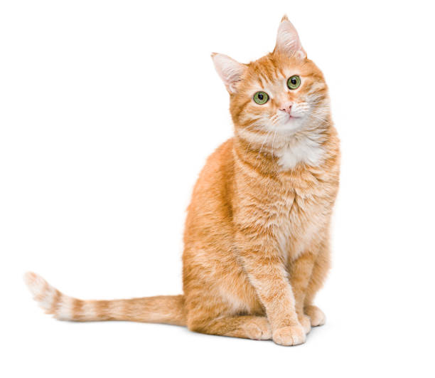

Pochi was adopted from an animal shelter and now resides in Seattle, WA, where she runs a small but successful web page design business exclusively
for cat clients.

Profile
favorite food - smoked salmon
hobbies - watching fishing on ESPN, snaking on garden flowers, monitoring the apartment parking lot